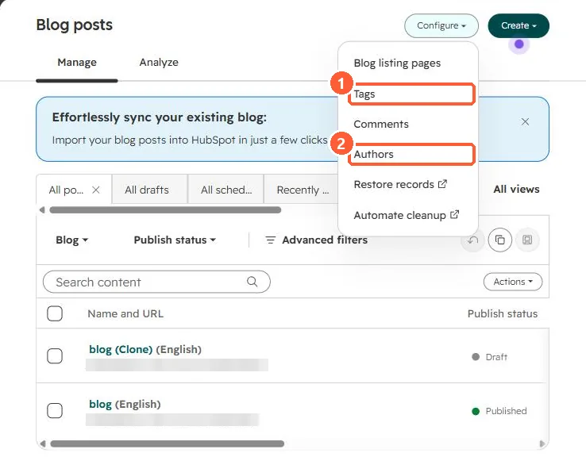

Short answer
HubSpot's KB: WordPress connect imports a WordPress blog using its homepage URL and is the most automated method when the site supports the standard WordPress API. If you see "This blog is not compatible with WordPress Connect", import with an XML file instead. Importing needs Edit and Publish permission.
1. Blog tools
Blog settings in my demo portal.


2. Keep in sync?
An import is one-time; it doesn't keep two blogs in sync.